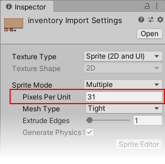
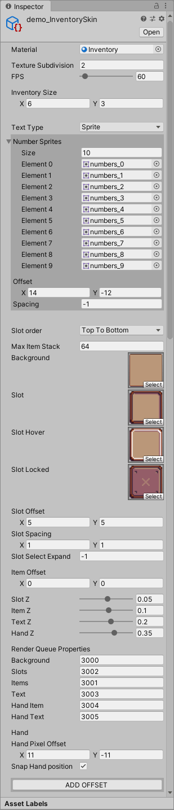

My Inventory
A simple inventory system for Unity3d
My inventory is an Inventory system designed to be easy to use, yet flexible and customizable enough for you to be able to achieve
Any inventory look you want ranging from Animal Crossing, to Stardew Valley and Minecraft, all inside the Unity game engine.
Every look is achievable using My Inventory!
Getting Started
Purchasing My Inventory from the Unity Asset Store gives you access to all the source files and code that builds My Inventory. You can then edit or add new fundamental features directly to the source code if you wish.
If you find a bug or want to request a feature, you can submit a support ticket here
Creating an InventorySkin
Before anything, you need to decide how your inventory should look, and to do that you need to create and configure an InventorySkin.
To create an InventorySkin, right-click in your asset browser,
Create > Inventory > Inventory Skin
  In your InventorySkin you can add sprites for the different elements of your inventory. If you want all the different sprites of your inventory to have the same pixel size, all of your sprite assets should have the same 'Pixels Per Unit' value.
When you have added your sprites and optionally a font to your InventorySkin, it helps to have your inventory display on the screen before tweaking the other settings. An InventorySkin can be modified at runtime through the inspector, and we will take advantage of this to easily see our inventory get updated as we modify our InventorySkin.
Keep in mind that not all of the InventorySkin variables support runtime editing, and you might occasionally need to restart your game to see changes.
Creating an InventoryImage
To display your inventory to the screen, you need to create an InventoryImage object and place it on a canvas.
To create an InventoryImage, right-click in the scene hierarchy,
UI > Inventory Image
///
public Inventory inventory;
public InventorySkin skin;
public InventoryImage image;
void Awake() {
inventory = Inventory.Load("player_inventory", skin);
}
void Update() {
inventory.Draw(image);
}
Now when you start the unity player, you should see an inventory on the screen.
Adding items
You will realize that there are no items in your inventory. To add an item to a slot, after loading your inventory you can use
inventory.PlaceItem(ItemShelf.Random, 0, 0, 1);
This will take a random item from the ItemShelf, and place it in slot(0, 0) with a count of 1.